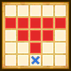

| Lv: | 150 |
|---|---|
| HP: | |
| MP: | |
| ATK: | |
| DEF: | |
| AGL: | |
| WIS: | |
| Move: | |
| Weight: | 65 |
| Weaknesses: |  |
 |
/ |  |
|
|---|---|---|---|---|---|
| Resistances: |  |
 |
/ | ||
| Immunities: |  |
| Family: | Role: |  |
Element: |
|---|
Note: All perks/abilities denoted with an * are using unofficial translations
| Abilities | ||||||
|---|---|---|---|---|---|---|
| Level | Type | Name | MP | Element | Range | Description |
| 1 | Time Theft* 時を奪う |
21 |  |
 1-3 |
Lowers 1 enemy's AGL for 3 turns, raises the user's AGL for 3 turns (Times usable: 3) |
|
| 33 | Abyssal Gears* 奈落の歯車 |
88 | 2-4 |
Deals major Zam-type martial damage (137 base potency) to 1 enemy 2 times, ignores some Light Damage Res | ||
| 54 | Rigor Spell* オムド・スペル |
143 | |
 Fan (L) |
Deals major spell damage to all enemies in area of effect, often puts to sleep, poisons, or blinds | |
| 80 |  |
Balance of Time* 時の天秤 |
0 | |
Self |
Heals a major amount of HP, restores a major amount of MP, and grants the user Overclock and Balance of Time for 3 turns (Times usable: 1) When a unit is in the Overclock state, it can perform 2 actions in one turn When a unit is in the Balance of Time state, the unit's AGL is raised by 30% |
| Base Perks | ||
|---|---|---|
| Level | Name | Description |
| 1 | Max HP +30 | Raises max HP by 30 |
| 1 | AGL +20 | Raises max AGL by 20 |
| 1 | Overclock* オーバークロック |
Battle start: Enable Overclock for 3 turns Before HP hits 0: Preserves HP at 1, 1 time per battle This perk can be triggered by poison, special effect spaces, ally attacks, and reflected attacks, as well as counterattacks, follow-ups, and other attacks or effects triggered by perks |
| 1 | Ancient Weapon's Sorcery* 古代の兵器・魔 |
Battle start, action start, or when revived: Reduces damage taken by 30% and nullifies some status ailments if the user's HP is at 100% |
| 1 | Ancient Weapon's Resilience* 古代の兵器・守 |
Battle start, action start, or when revived: Reduces damage taken by 30% if the user's HP is 50% or over |
| 110, 120, 130, 140 | Spell Potency/Recovery +2% | Raises spell potency/recovery by 2% |
| 110, 120, 130, 140 | Martial Potency/Recovery +2% | Raises martial potency/recovery by 2% |
| 150 | Ability Potency/Recovery +2% | Raises ability potency/recovery by 2% |
| Awakening Perks | ||
|---|---|---|
| Awakening | Name | Description |
| 1 | Harbinger of Destruction | Action start on odd turns until turn 10: Heals 15% of max HP, restores 4% of max MP, and raises DEF, AGL, and spell and martial potency/recovery for 3 turns |
| 2 | Zap Res +25 | Raises Zap resistance by 25 |
| 3 | Lost Technology* ロストテクノロジー |
When making a spell or martial attack: Heals 15% of the user's max HP and raises damage dealt for 3 turns |
| 3, 5 | Spell Potency/Recovery +5% | Raises spell potency/recovery by 5% |
| 3, 5 | Martial Potency/Recovery +5% | Raises martial potency/recovery by 5% |
| 4 | Woosh Res +25 | Raises Woosh resistance by 25 |
| 5 | Temporal Illusion* 時の幻 |
Battle start: Greatly raises evasion rate for 3 turns |
| 1, 2, 3, 4, 5 | Stats Up | Raises HP, MP, ATK, DEF, WIS and AGL by 5% |